Le Lunch du jour24,00 €
Du mercredi au vendredi
Entrée et plat, ou plat et dessert : la suggestion du Chef, élaborée avec des produits frais et de saison.
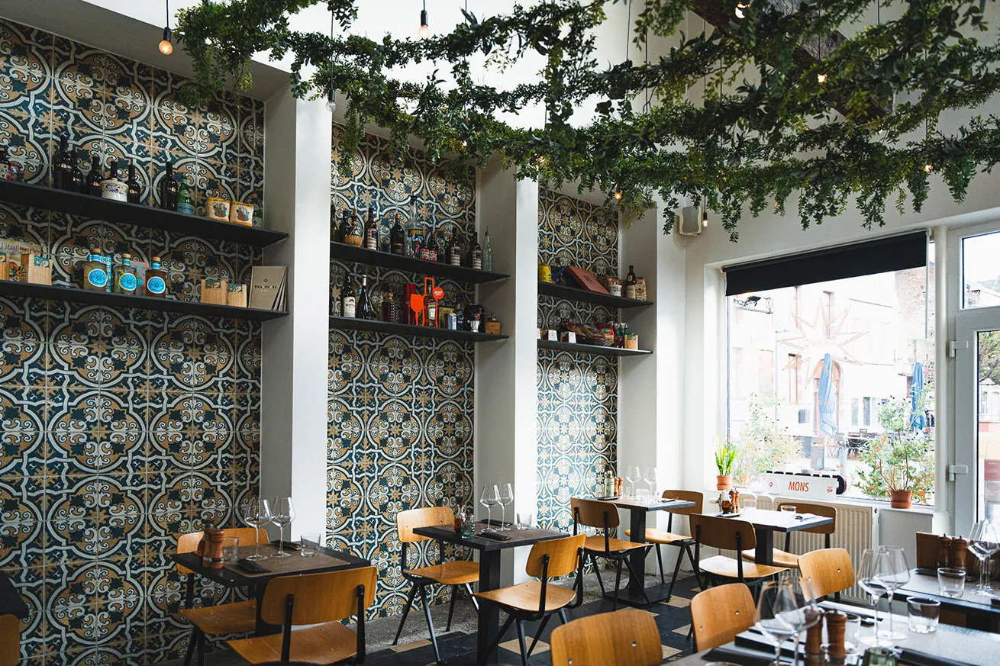
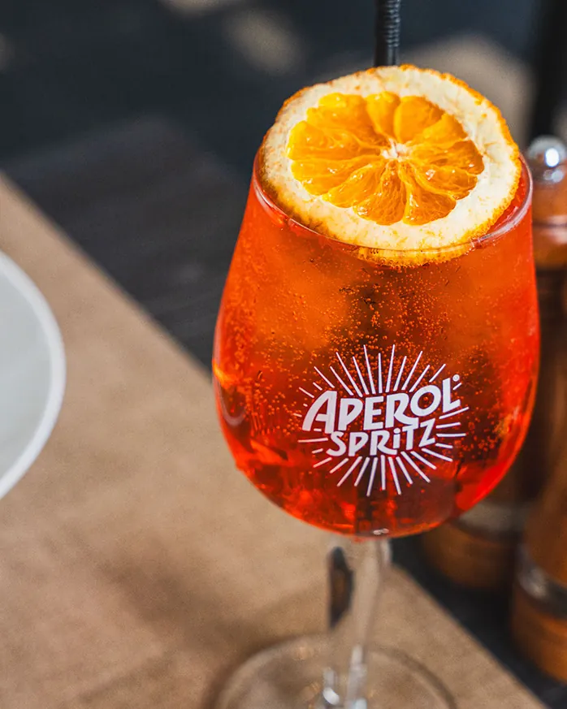
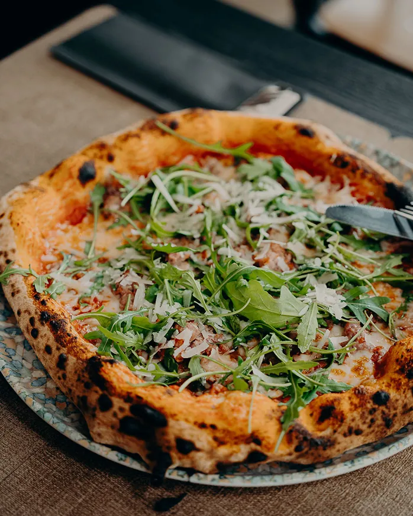
Pizze au four, pâtes servies dans leur poêle, tagliere à partager et dolci maison.
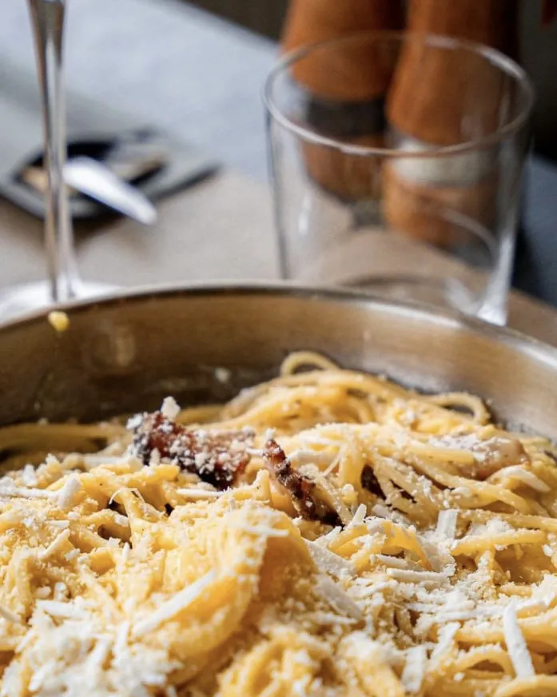
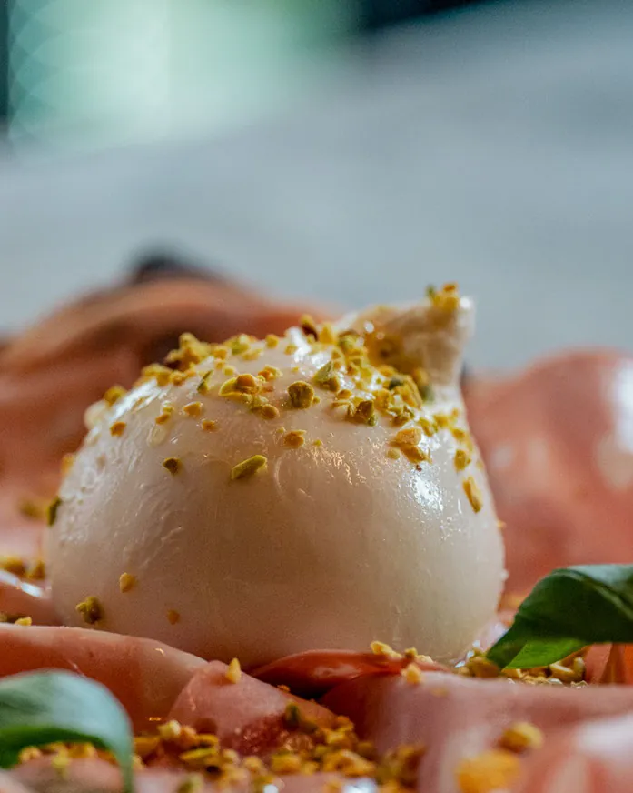
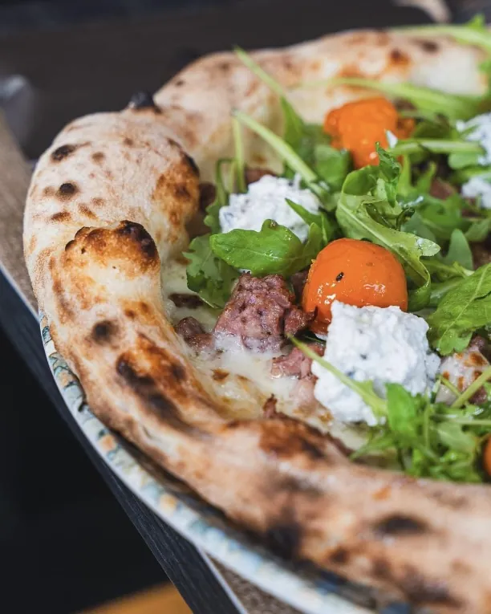
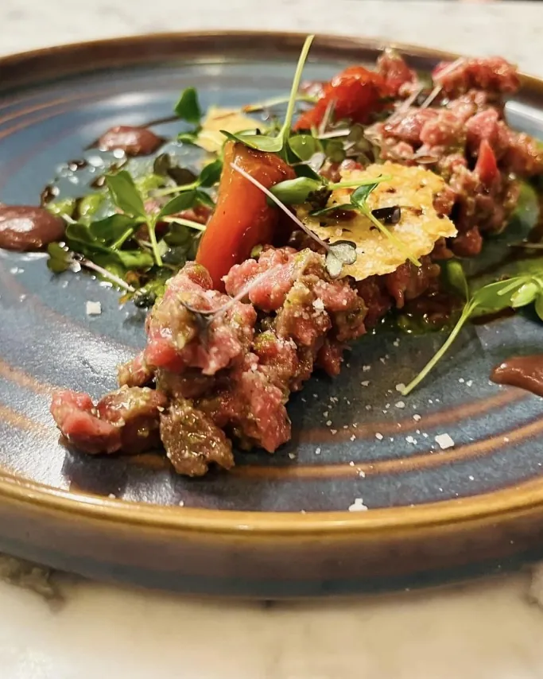
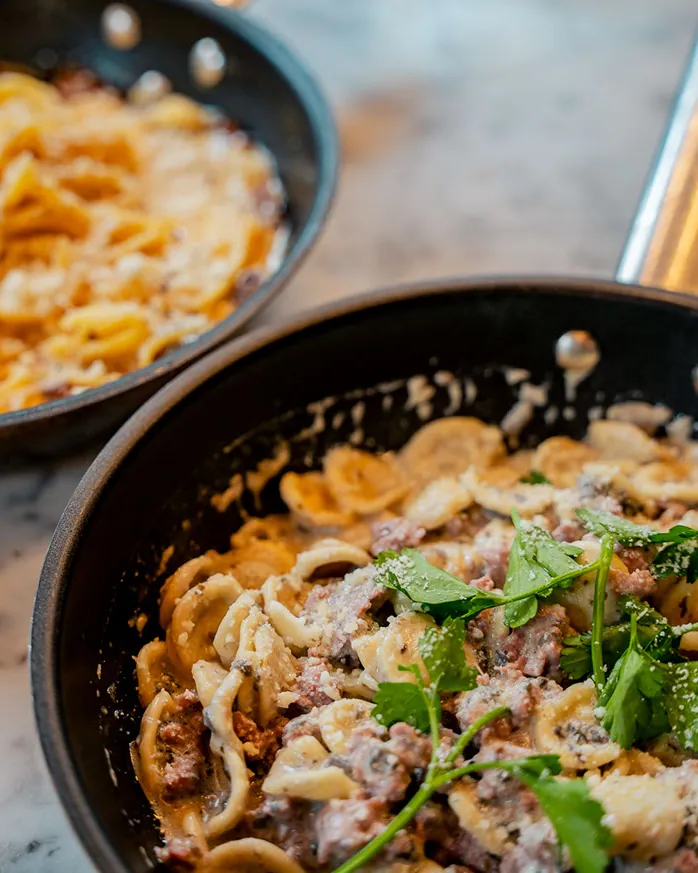
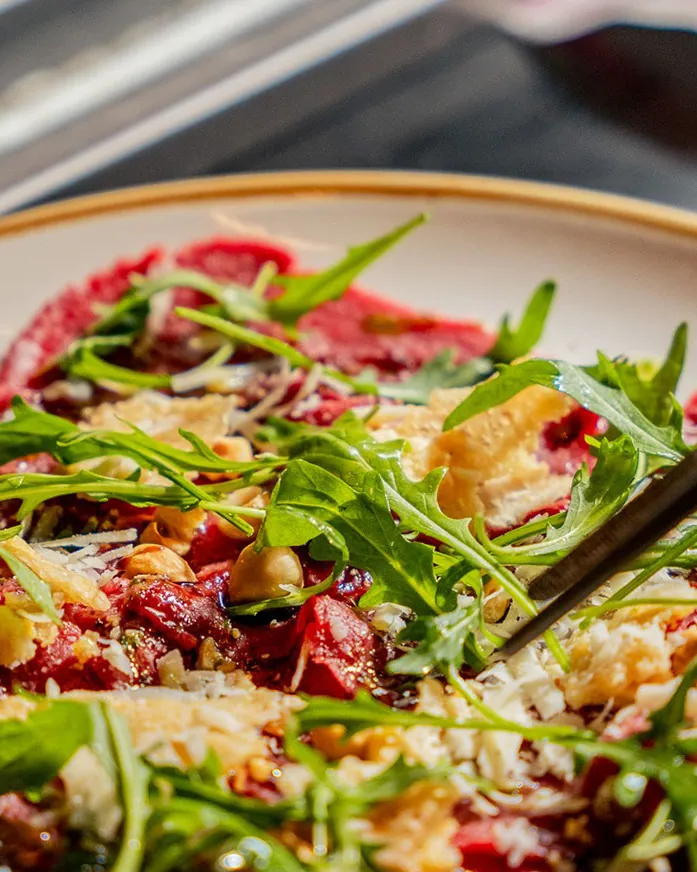
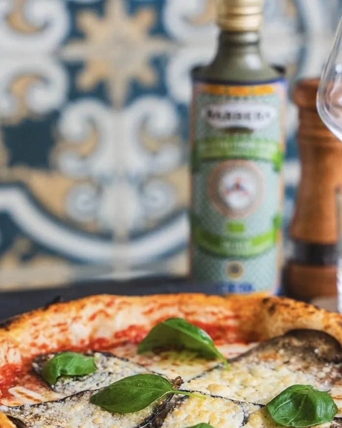
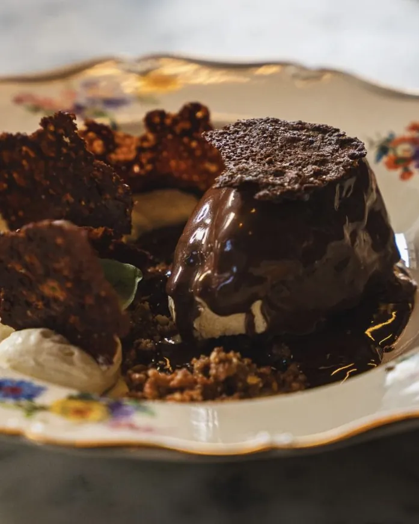
Le jour, l'heure et le nombre de couverts : trente secondes, et la table est demandée.
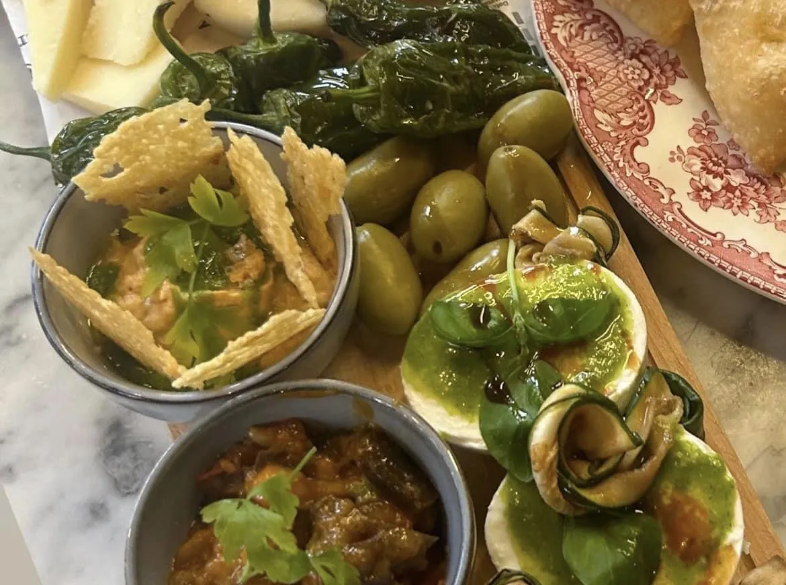
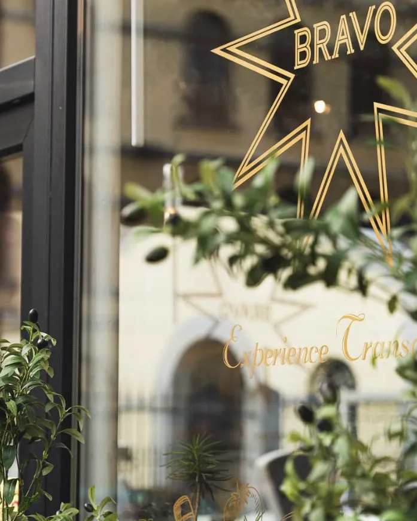
L'expérience transalpine, c'est aussi la convivialité des grandes tables et le plaisir de partager. Dès 4 à table, la formule Amici vous sert un assortiment d'une partie de la carte, dans un espace privatif.
Et tout l'amour que l'équipe met à faire de ce moment un souvenir savoureux du pays du soleil.
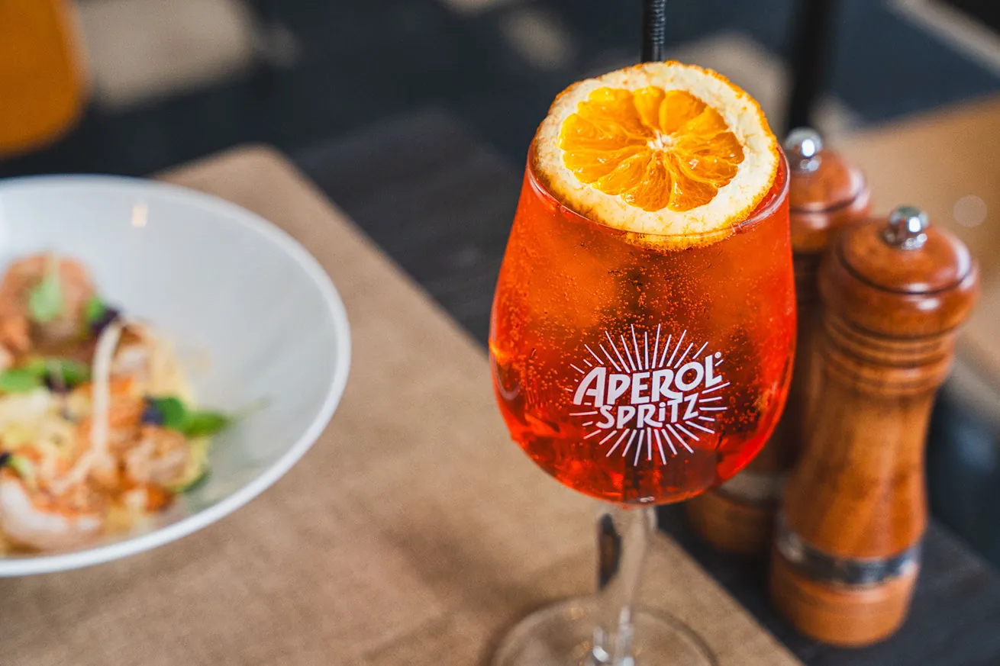
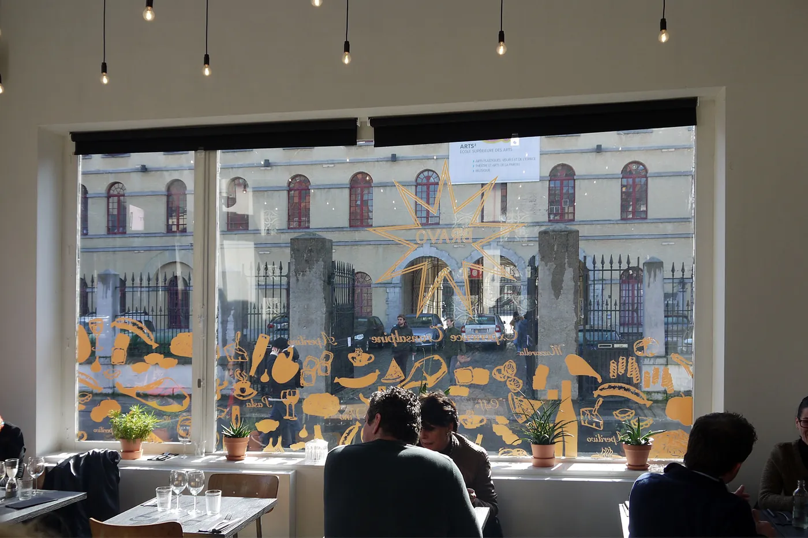
De 11 h à 22 h, on peut venir prendre juste un verre : un gin, un spritz ou un vin, avec un antipasto à partager. Ou tout simplement un café.
Aperol Spritz9,50 €
Limoncello Spritz9,80 €
Spritz Fragolina BasilicApérol, prosecco, fraise et basilic9,80 €
MareGin Mare, basilic et Sanpellegrino Tonica15,50 €
Virgin HugoSans alcool : fleur de sureau, menthe, lime, eau pétillante8,50 €
| lundi | fermé |
|---|---|
| mardi | fermé |
| mercredi | 11 h – 23 h |
| jeudi | 11 h – 23 h |
| vendredi | 11 h – 23 h |
| samedi | 11 h – 23 h |
| dimanche | 11 h – 17 h |
À emporter · de 12 h à 15 h et de 18 h à 22 h
Antipasti · servis tout au long de la journée